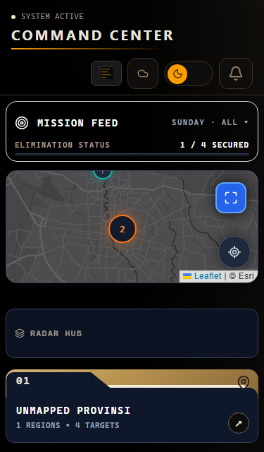
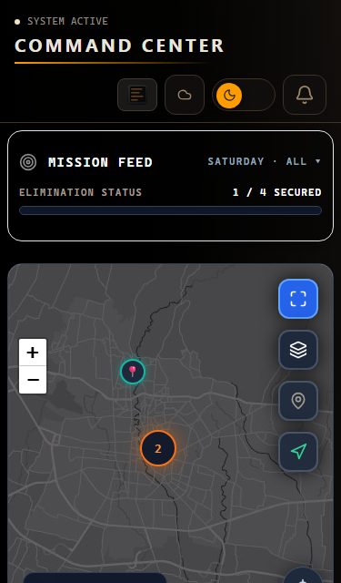
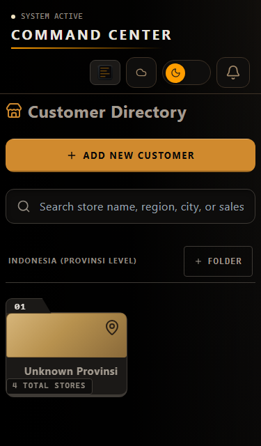
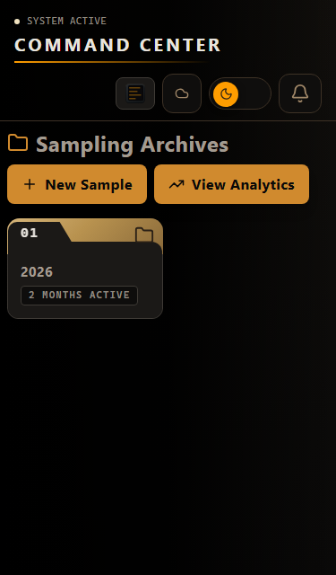
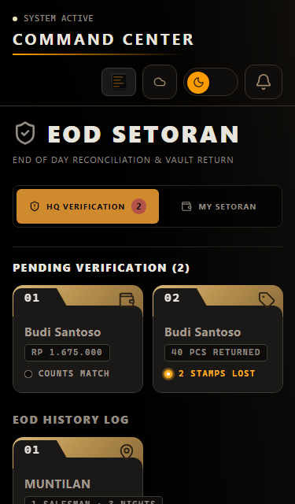

KPMCommand Center
Satu aplikasi di telepon setiap sales: stok di motor, penjualan di warung dengan nota tercetak, uang titipan, setoran akhir hari, stok opname, pita cukai, peta toko dan rute harian. Pemilik melihat semuanya langsung, saat itu juga.
Diukur langsung dari repositori, 20 September 2026. Setiap angka di halaman ini membawa tanda ● BUKTI — ketuk untuk melihat dari mana angka itu datang.
Bukan aplikasi akuntansi. Sistem distribusi.
Rumus kerjanya sederhana: setiap bungkus rokok yang keluar gudang punya jejak — siapa yang membawa, ke warung mana, dibayar tunai, transfer, atau titip. Malam harinya sales menyetor, bos memverifikasi, dan gudang menerima kembali sisa stok. Semua di satu tempat.
bukti
bukti
bukti
Angka, bukan perasaan.
Semua diukur pada 20 September 2026 dari kode yang sebenarnya. Pemeriksaan otomatis bisa dijalankan di depan siapa pun dalam sekitar satu setengah menit.
bukti
bukti
bukti
bukti
bukti
Dibuat untuk rokok, bukan untuk toko pada umumnya.
bukti
bukti
bukti
bukti
bukti
bukti
bukti
bukti
Masuknya lewat Google, datanya terpisah per perusahaan.
bukti
bukti
bukti
Ini bukan gambar. Ini kontrol aslinya.
Aturan gaya di bawah disalin dari berkas tema aplikasi (theme.css). Tidak ada bayangan palsu: setiap cahaya adalah gradasi, setiap lampu hanya menyala saat sesuatu sedang terjadi.
Map folder
bukti
Lampu status toko
bukti
Penghitung nixie
bukti
Verifikasi setoran malam
bukti
Kartu pemain dalam pengerjaan
bukti
Diukur pada lebar 375 piksel.
Setiap panel harus bekerja di telepon sebaik di komputer. Bingkai-bingkai ini adalah tangkapan layar dari laboratorium uji aplikasi pada lebar telepon.

Feed satu baris, peta menjadi strip 160 px, folder wilayah langsung terlihat. Jari menggulir halaman, bukan peta.
bukti

Setiap wilayah adalah folder bernomor; ketuk untuk masuk, tahan untuk mengintip.
bukti

Folder dua per baris; alat admin (hapus / ubah) terlipat di balik tombol ⋯.
bukti

Tahun › bulan › tanggal › tempat sebagai folder yang sama; daftar barang sebagai baris, bukan tabel.
bukti

Satu folder per sales; ketuk → lembar malam dengan total nixie dan satu pelat.
bukti
Rencana harga — belum final.
Angka di bawah adalah rencana yang tercatat, bukan kesepakatan. Semuanya bergantung pada satu bilangan yang belum dikonfirmasi: jumlah pengguna (25–30) dan berapa di antaranya sales lapangan.
| Paket | Angka |
|---|---|
| Uji coba 3–6 bulan, seluruh tim | Rp 2,5 juta / bulan |
| Setelah uji coba, sampai 30 pengguna | Rp 5 juta / bulan |
| Pengguna ke-31 dan seterusnya | Rp 150 ribu / orang / bulan |
| Implementasi (migrasi data + pelatihan 30 orang) | Rp 7,5 juta |
| Biaya jalan (Firebase, alat, 8–15 jam dukungan) — batas bawah | ≈ Rp 2 juta / bulan |
Aldi sendiri condong ke Rp 10 juta/bulan; saran yang tercatat: buka di 10, siap mendarat di 7. bukti
Empat tolok ukur yang berhenti di tempat yang sama
Lisensi selamanya dan hak cipta
| Skema | 5 tahun |
|---|---|
| Langganan Rp 5 juta × 60 bulan | Rp 300 juta |
| Lisensi selamanya Rp 250 juta + pemeliharaan Rp 50 juta/tahun | Rp 500 juta |
Lisensi selamanya ditawarkan untuk ditolak — lebih mahal bagi pembeli. Hak cipta tidak dijual: menjualnya berarti berhenti menawarkan ke pabrik lain selamanya; batas atas yang jujur bila ada yang sungguh mendesak: biaya bangun ulang + premi, Rp 2–3 miliar. Pasal 9 (escrow) sudah memberi pembeli kode bila pengembang berhenti 90 hari. bukti